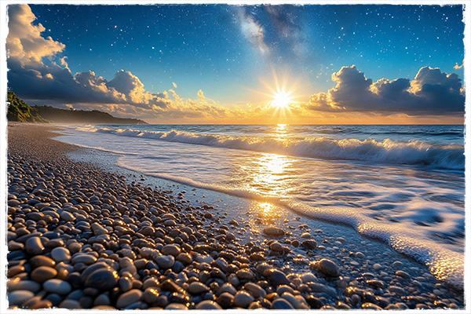
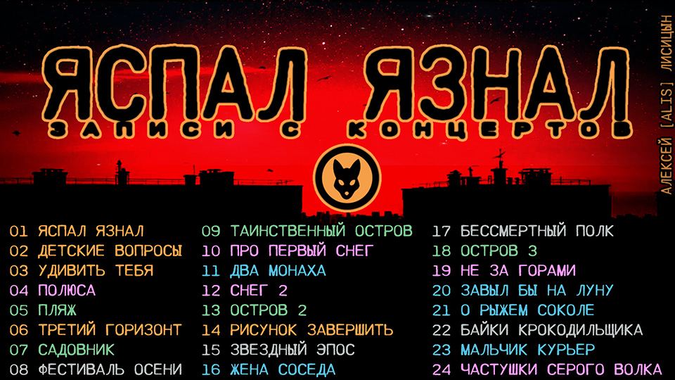

+---------------------------------+
|присел слегка2 |
|вокруг затихли голоса |
|прикрыл глаза |
|а перед ними всё мелькает суета |
+---------------------------------+
я спал а там
всё альфы ищут счастья по ночам
мечтал летал
и лук дрожит натянут от плеча
я шёл я пел
и листья клёнов падали с небес
я брёл смотрел
в осеннем танце по ветру тянулся жёлтый лес
я молод стар
а ветер пусть листву уносит ввысь
мне холод пар
и я лечу со всеми жухлый лис
я глух я слеп
но знаю как боится ландыш жаркого луча
я болен бред
я слышу ноты что в грозу поёт трава
я буйвол лев
я умиляюсь как резвится малышня
я моль я червь
и я трясусь увидев курицы огромные глаза
я джин я маг
плащом закрою вас от звёздного дождя
я друг я враг
и на коленях вот прошу пощады для себя
я ветер снег
ох щас я вам устрою жаркую зиму
но я я человек
и вот в мороз от холода танцую на снегу
я спал я знал
что альфы крадут счастье по ночам
чего же ждать
и выпустил стрелу с плеча
2000-2026

мой парень переплюнул сам себя
наевшись раз мороженным без спросу
он озадачил меня как обычно пап
а почему у меня столько вопросов
для мамы то оставил ты десерт
от сладкого умыть надо дразнилку
зачем вопросов столько задаёшь
ты тренируешь говорилку
о многом предстоит узнать
что то принять с чем то смириться
да что там женщин предстоит понять
на той планете где ты появился
тут чья то жизнь пройдет в сиденьи у костра
а кто-то с грязи устремиться в князи
ты складываешь кубики дворца
ты создаёшь зависимости связи
зачем вопросов столько чтоб запомнить
как пишется вопроса знак рукою
зачем их вслух задать чтобы заполнить
до верха этот мир вокруг собою
ты задаешь чтоб научиться различать
конфеты от непрошеных советов
видно собрался долго ты пожить
коль хочешь получить столько ответов
распахнуты врата ты сортируешь зерна
и отделяешь цельность от плевел
с каждым вопросом тоньше нить привязки
и вот уже воздушным змеем полетел
слушая ответ можно мороженного вкусить
всё потому что крутится земля
да потому что есть кого спросить
да потому что ты есть мама я
зачем хвостом прикрыт чуть влажный нос
зачем ночами воем на луну
да потому что слишком бродит кровь
да потому что зов зовет во тьму
мой парень переплюнул сам себя
налопавшись арбузом раз без спросу
он к основному развлеченью при ступил
а почему у меня столько вопросов
2025
удивить тебя
нет наверно слов
разбудить тебя
вязко море снов
поразить тебя
но не ты мой враг
в ночь увлечь тебя
это чуждый мрак
закружить тебя
по дороге грёз
полюбить тебя
силой жарких слов
притянуть тебя
волей подчинив
отпустить тебя
в силе обвинив
восхвалить тебя
в уста мёд набрав
окрылить тебя
в облака подняв
увести тебя
к горизонтам льдин
расплести тебя
в блеск сиянье зим
окрутить тебя
мыслью гибкою
ослепить тебя
речи бликами
осветить тебе
в небе тень планет
пригласить тебя
ступать следом в след
обмануть тебя
сердца часть отдав
приласкать тебя
буду я ли прав
протянуть к тебе
нос понюхать страсть
спрятаться за тень
от огня дрожать
восхитить тебя
костёр просит дров
удивить меня
мало пары слов
2001

вновь было брошено и разлетелось на полу стекло
ты мой враг увы вынужден признать
теперь мы смотрим в телевизор и в окно
по комнатам бесцельно разбредясь
небо в окне мы видим с разных полюсов
над ним сияют разные миры
своей погоды ждём мы от ветров
и в разную нас даль уносят сны
под бликом с неба преклонив колена
ведём мы тайную войну
и ищем в разных стогах сена
с тобой вдвоём одну иглу
нет друг здесь с тобой не по пути
нам в разные работать смены
в ту темень не со мной тебе идти
прошу прощенья за измену
не плакать вместе нам навзрыд
наши сердца о разном ноют
этот вокзал не для двоих
один билет на этот поезд
не пересечься двум путям
дорогой ровной бесконечно
не биться в такт нашим сердцам
под общею звездою вечно
не ставить вместе парусов
нам в разных ходить океанах
и не склонить наших голов
над картою пиратских кладов
и не спастись нам на кругу
потянут вниз кого то волны
а у костра на берегу
сидеть по разные стороны
мы говорим на разных языках
по разному одни читаем строки
по своему стоим на двух ногах
и каждый из нас по своему одинокий
иссякнет теплых дней запас
окажемся мы на морозе в клетке
и более пушистый хвост из нас
сорвет весь банк на той рулетке
когда нибудь настанет час
внутри окажемся мы круга
который должен сблизить нас
должны же мы понять друг друга
1998-2026

солёны воды увы сладки
я вышел на свой путь воистину он главный
я не ищу бриллиант меж серой гальки
я просто собираю камни
закрыв глаза я вижу густой лес
я опускаю в камни семя
здесь не взметнётся зелень до небес
я прос то убиваю время
я не расслаблен занят делом
я не седой покрытый солью
я ощущаю уклон пляжа телом
я чувствую шершавости поверхности ладонью
я не ленивый человек
и я не то чтоб очень сонный
из под полузакрытых век
я лишь отсчитываю волны
вот там толпятся гребешки
здесь облачка от солнца тают
я добавляю небу синевы
и замедляю в нём круженье чаек
я развлекаюсь как могу
я выдыхаю в море тёплый фронт
я звёздам не даю зайти
я солнцу не даю упасть за горизонт
я не стремлюсь забыться сном
кто бывший на войне не ранен
я вспоминаю год за годом день за днём
я с камня взгляд перевожу на камень
лазурный цвет несёт вода
устав от омутов кипящих мутных
я прикрываю наконец глаза
и я сливаюсь с вечности минутой
шум голосов всё тянется балладой
мелодия от плеска волн всё льется
щека встречается с камней прохладой
я ухожу спиною в дымку солнца
жара убьёт но всё сковала лень
шаг в тень он нереально сложен
вот полночь следующий день
вот начинает лопаться на теле кожа
2001